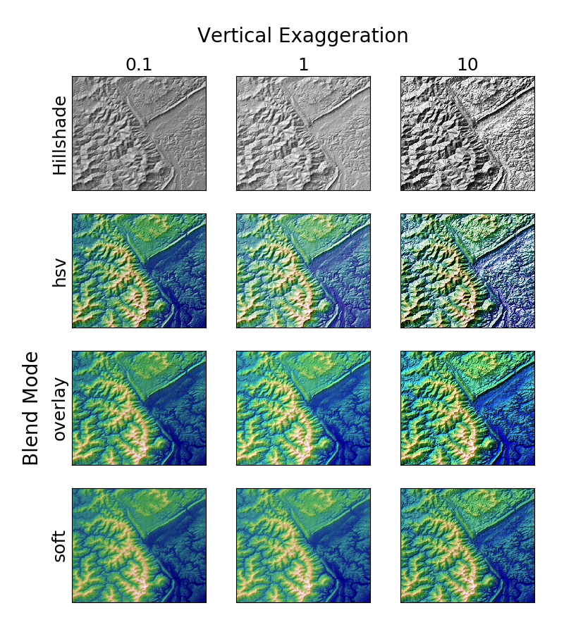

Version 2.2.5
Note
Click here to download the full example code
Demonstrates the visual effect of varying blend mode and vertical exaggeration on "hillshaded" plots.
Note that the "overlay" and "soft" blend modes work well for complex surfaces such as this example, while the default "hsv" blend mode works best for smooth surfaces such as many mathematical functions.
In most cases, hillshading is used purely for visual purposes, and dx/dy can be safely ignored. In that case, you can tweak vert_exag (vertical exaggeration) by trial and error to give the desired visual effect. However, this example demonstrates how to use the dx and dy kwargs to ensure that the vert_exag parameter is the true vertical exaggeration.
import numpy as np
import matplotlib.pyplot as plt
from matplotlib.cbook import get_sample_data
from matplotlib.colors import LightSource
with np.load(get_sample_data('jacksboro_fault_dem.npz')) as dem:
z = dem['elevation']
#-- Optional dx and dy for accurate vertical exaggeration ----------------
# If you need topographically accurate vertical exaggeration, or you don't
# want to guess at what *vert_exag* should be, you'll need to specify the
# cellsize of the grid (i.e. the *dx* and *dy* parameters). Otherwise, any
# *vert_exag* value you specify will be relative to the grid spacing of
# your input data (in other words, *dx* and *dy* default to 1.0, and
# *vert_exag* is calculated relative to those parameters). Similarly, *dx*
# and *dy* are assumed to be in the same units as your input z-values.
# Therefore, we'll need to convert the given dx and dy from decimal degrees
# to meters.
dx, dy = dem['dx'], dem['dy']
dy = 111200 * dy
dx = 111200 * dx * np.cos(np.radians(dem['ymin']))
#-------------------------------------------------------------------------
# Shade from the northwest, with the sun 45 degrees from horizontal
ls = LightSource(azdeg=315, altdeg=45)
cmap = plt.cm.gist_earth
fig, axes = plt.subplots(nrows=4, ncols=3, figsize=(8, 9))
plt.setp(axes.flat, xticks=[], yticks=[])
# Vary vertical exaggeration and blend mode and plot all combinations
for col, ve in zip(axes.T, [0.1, 1, 10]):
# Show the hillshade intensity image in the first row
col[0].imshow(ls.hillshade(z, vert_exag=ve, dx=dx, dy=dy), cmap='gray')
# Place hillshaded plots with different blend modes in the rest of the rows
for ax, mode in zip(col[1:], ['hsv', 'overlay', 'soft']):
rgb = ls.shade(z, cmap=cmap, blend_mode=mode,
vert_exag=ve, dx=dx, dy=dy)
ax.imshow(rgb)
# Label rows and columns
for ax, ve in zip(axes[0], [0.1, 1, 10]):
ax.set_title('{0}'.format(ve), size=18)
for ax, mode in zip(axes[:, 0], ['Hillshade', 'hsv', 'overlay', 'soft']):
ax.set_ylabel(mode, size=18)
# Group labels...
axes[0, 1].annotate('Vertical Exaggeration', (0.5, 1), xytext=(0, 30),
textcoords='offset points', xycoords='axes fraction',
ha='center', va='bottom', size=20)
axes[2, 0].annotate('Blend Mode', (0, 0.5), xytext=(-30, 0),
textcoords='offset points', xycoords='axes fraction',
ha='right', va='center', size=20, rotation=90)
fig.subplots_adjust(bottom=0.05, right=0.95)
plt.show()
Keywords: matplotlib code example, codex, python plot, pyplot Gallery generated by Sphinx-Gallery